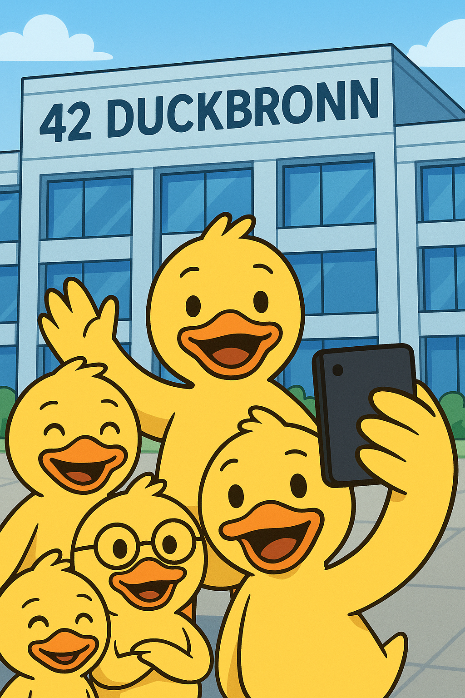

What is 42 Duckbronn?

42 Duckbronn is not just a school , it’s a pond of possibilities. Imagine a place where
lectures are replaced by quacks, where every debug session is solved by floating ideas
across ripples, and where teamwork isn’t optional , it’s instinct. We are the world’s first
fully duck-powered coding academy, training the brightest young ducklings to conquer bugs,
build empires of bread-based startups, and paddle confidently into the future of tech.
Here, we don’t grade with numbers , we grade with feathers. We don’t call it networking ,
we call it pond-necting. At Duckbronn, every day is a chance to spread your wings,
learn from fellow ducks, and swim through challenges together. Whether you dream of
becoming a Senior QuackOps Engineer, a Beakend Developer, or even the next great Duckpreneur,
Duckbronn gives you the tools, the flock, and the bread crumbs to succeed. 🦆✨
Why 42 Duckbronn?
Because no other place understands the true art of coding quite like us. While other
universities waste time on lectures, we practice the legendary duck method: stare at
the code, quack at it, and let the answers float to the surface. Our pond isn’t just a
place to learn , it’s a community where ducks of all feathers waddle together.
Other schools promise careers. Duckbronn promises migration into greatness.
Other schools feed you cafeteria food. Duckbronn feeds you breadcrumbs of wisdom. Other
schools give you paper diplomas. Duckbronn gives you wings. Why settle for the human way,
when you can embrace the duck way? 🥖🦆
History of How We Came to Be
It all began with the Duck Web , a mysterious network of interconnected ponds where ducks
shared knowledge long before the internet was invented. Generations of mallards, swans, and
geese contributed their wisdom until, in the late 20th century, the great migration of
knowledge landed here in Heilbronn. Out of the Duck Web rose Duckbronn, a place where the
traditions of pond wisdom met the power of modern computing.
Today, Duckbronn continues to honor its roots, training the finest feathered coders in the
world. Our alumni can be found building quacktastic apps, designing the fluffiest algorithms,
and leading the next wave of feathery innovation. 🌊💻
Is Duckbronn Too Good to Be True?
Absolutely. And yet , here we are. Duckbronn is amazing not because we claim it, but because every duck that waddles through our doors becomes part of something bigger. We offer an education system without professors, without tuition fees, and without stress (unless you get to the project known as 'MiniDuckShell') just pure, collaborative quackademics. Our students don’t drop out, they simply fly south for the winter. And when they return, they come back stronger, fluffier, and ready to code. 🦆🔥
Our Partners
- Dieter Quack-Foundation – supporting the fluffiest duck dreams
- T-Quacksystems – helping us code across all ponds
- Haufe Quackroup – ensuring us ducks stay cloud-secure
- mmQuackMake – innovation partner flapping with us into the future
- And many more!